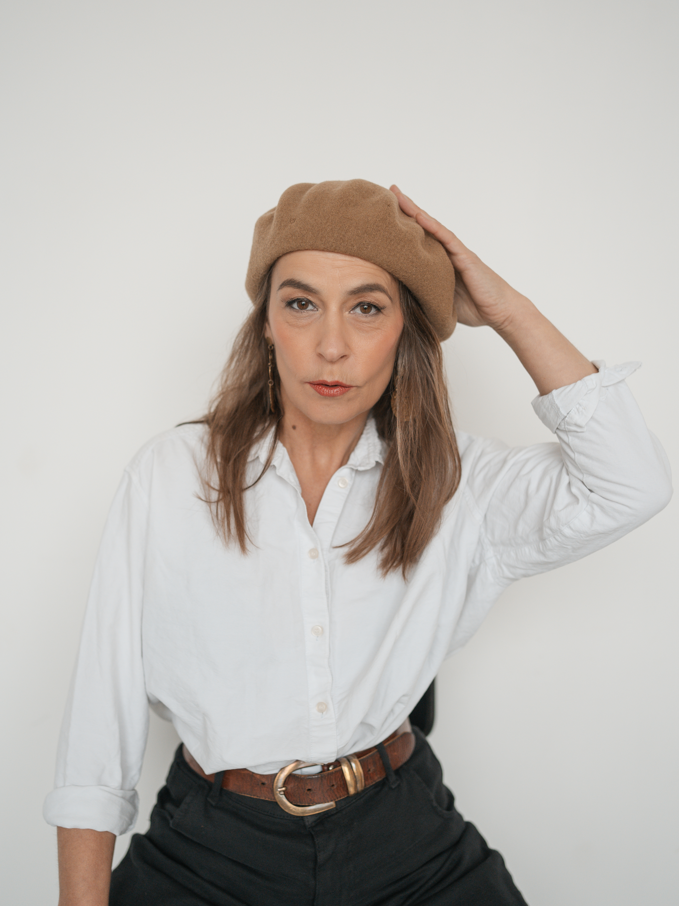

LektorkaAndrea Marečková
Herečka · režisérka · kouč
Propojuje divadlo s osobním rozvojem. Vychází z improvizace, práce s tělem a hereckých technik, které otevírají prostor pro autenticitu a hlubší kontakt se sebou i s druhými. Vede workshopy pro děti, dospívající i dospělé.
Více o Andree
Působila v řadě divadel, v současnosti například v divadle Minor. Několik let byla členkou společnosti Fórum pro prožitkové vzdělávání. Je absolventkou výcviku Koučink jako umění. Ve své práci využívá principy Divadla Fórum, které vnímá jako silný nástroj pro zkoumání konfliktů a obtížných situací.